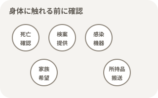
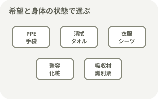
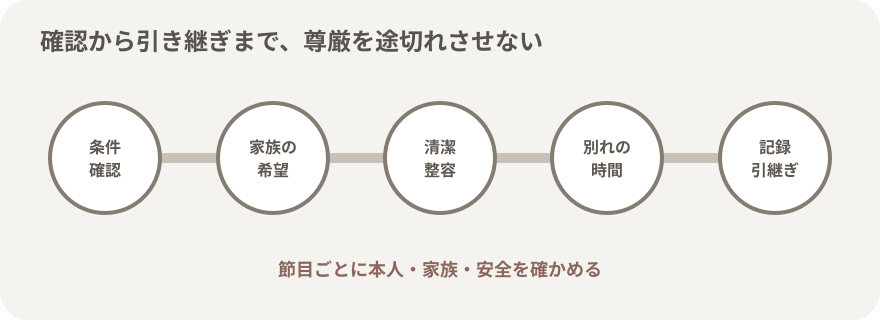
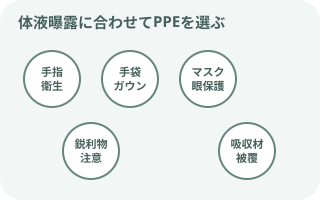
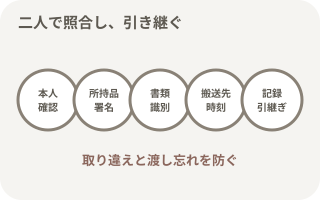

エンゼルケアで大切にすること

- 名前で呼び、露出を最小限にし、声をかけながらケアする。
- 生前の希望、身だしなみ、衣服、眼鏡、義歯、髪型、宗教・文化的慣習を確認する。
- 家族がそばにいる時間を急がせず、説明は短く区切り、理解と希望を確かめる。
- 家族の参加は選択肢として示し、参加しないことも同じように尊重する。
- できない希望がある場合は、理由と代わりにできることを伝える。
ケアを始める前の確認

身体に触れる前に分岐を確認する
- 医師による死亡確認が完了しているか
- 死亡時刻と家族への説明内容
- 予期しない死亡、外因死、医療事故、検案・解剖の可能性
- 臓器・組織提供の意思と連絡状況
- 感染症と必要な予防策
- 医療機器・創部・ドレーンをどう扱うか
- 家族の面会、参加、宗教・文化的希望
- 所持品・貴重品と退室予定
死亡確認の介助

看護師は確認しやすい環境を整える
- 医師へ経過、最終確認時刻、心電図・モニター状況を簡潔に報告
- 時計、聴診器、ペンライト、必要な記録物を準備
- 照明、体位、胸部へのアクセス、周囲の静けさを整える
- 家族が立ち会うかを確認し、これから行うことを説明
- 医師が告げた死亡時刻を復唱し、正確に記録
死亡診断書・死体検案書は、人の死亡を医学的・法律的に証明するために医師が交付する。看護師が日常の病棟業務として独立して死亡診断を行うものではない。
家族への支援と希望の確認

答えを急がせず、選べるように伝える
- そばで過ごす時間、面会したい人、写真や思い出の品
- 清拭、洗髪、整髪、化粧、ひげそり、着替えへの参加
- 本人らしい衣服、眼鏡、義歯、補聴器など
- 祈り、読経、宗教者・チャプレンへの連絡
- 身体に触れてよいか、触れたくない部位や慣習
- 退室時刻、葬儀社、必要書類、連絡先
必要物品

希望と身体の状態に合わせて準備する
- 手袋、マスク、エプロン・ガウン、必要時は眼の防護
- 清拭用タオル、洗面器、温湯、洗浄剤、ドライシャンプー
- 新しい寝衣・衣服、シーツ、タオル、掛け物
- くし、ひげそり、化粧品、保湿剤、本人の整容用品
- 吸収パッド、オムツ、ガーゼ、被覆材、テープ
- 廃棄物容器、ランドリーバッグ
- 識別票、所持品記録、搬送に必要な物品
針や鋭利物を使った固定・閉鎖は避ける。体液漏れへの対応物品と、医療機器・創部の処置方法は院内手順に合わせる。
エンゼルケアの基本手順
- ケア開始条件を確認する
死亡確認、検案・解剖、提供、感染症、医療機器、家族の希望を確認する。
- 家族へ説明して時間をつくる
ケアの内容、参加できること、所要時間の目安を伝え、希望を急がせずに聞く。
- 環境と安全を整える
カーテン・ドアを閉め、必要物品とPPEを準備する。複数人で安全に体位変換する。
- 医療機器と創部を確認する
抜去・留置の指示を確認し、出血・漏れ・皮膚損傷を最小限に処置する。
- 排泄物と体液漏れに対応する
失禁や分泌物を静かに除き、吸収材を使う。必要以上の圧迫や深い詰め物を避ける。
- 清潔を整える
全身を観察しながら清拭し、必要に応じて洗髪、口腔内・陰部の清潔を整える。
- その人らしく整容する
髪、顔、ひげ、化粧、義歯、眼鏡、衣服を本人・家族の希望に合わせる。
- 安楽な姿勢と寝床を整える
自然な仰臥位を基本に、四肢と頭部を整え、新しいシーツと掛け物で包む。
- 家族との時間を確保する
ケア後の姿を一緒に確認し、照明・室温・椅子を整えて、静かに過ごせるようにする。
- 識別・所持品・記録を確認する
複数の識別方法、所持品の受け渡し、必要書類、搬送先、時刻をダブルチェックする。

身体・医療機器・創部の整え方
- 眼：無理に圧迫せず、まぶたを静かに閉じる。閉じにくい場合は院内手順で対応する。
- 口：口腔内の分泌物をやさしく除き、義歯は状態と希望を確認して装着する。無理に口を閉じない。
- 皮膚：発赤、表皮剥離、水疱、褥瘡、紫斑を観察し、摩擦と強いテープ固定を避ける。
- 体位：複数人でゆっくり動かし、頭部と四肢を自然な位置に整える。身体の硬直が進む前に姿勢を確認する。
- 点滴・カテーテル・ドレーン：一律に抜去しない。検案・解剖・提供、出血、感染、ペースメーカーなどを確認して指示に従う。
- 創部・ストーマ：漏れと臭気を抑え、外観を損なわない被覆を行う。縫合や抜去が必要な場合は実施者を確認する。
- 衣服：家族が選んだ衣服を尊重し、着脱で皮膚や関節を傷つけない。
感染対策と体液漏れ

生前と同じく標準予防策を基本にする
- ケア前後の手指衛生
- 血液・体液との接触には手袋
- 衣服汚染が予測される場合はエプロン・ガウン
- 飛散が予測される場合はマスクと眼の防護
- 鋭利物、骨片、留置針による損傷を防ぐ
- 感染経路別予防策と搬送先への情報共有
血液・排泄物・分泌物が漏れる可能性を見込み、吸収材と防水性のある資材を選ぶ。感染症名だけで過度に隔離せず、病原体の感染経路、行うケア、体液曝露の可能性からPPEを決める。
通常のケアへ進まない場面
- 死因が明らかでない、予期しない急変・死亡
- 転倒・転落、外傷、窒息、中毒、自殺・他殺など外因が疑われる
- 医療事故や治療関連死の可能性がある
- 警察、検案、司法解剖・病理解剖への連絡が検討されている
- 臓器・組織提供の可能性があり、コーディネーターの指示を待つ
チューブ、点滴、ドレーン、衣類、寝具、薬剤、医療機器設定、周囲の物品をそのまま保つ。誰が、いつ、何を確認・変更したかを記録し、許可が出るまで清拭・更衣・抜去を行わない。
所持品・記録・退室

取り違えと渡し忘れを防ぐ
- 氏名・生年月日・IDなど複数項目で本人確認
- 身体と搬送資材の識別表示を院内手順どおりに行う
- 貴重品・衣類・補助具を二人で確認し、受取者と署名を記録
- 死亡時刻、医師説明、家族の反応・希望、実施したケア
- 留置した機器、創部、体液漏れ、感染対策
- 葬儀社・搬送先、退室時刻、同行者、引継ぎ内容
ケアを行ったスタッフへの支援
長く関わった患者の死、急死、若年者、家族への対応は、看護師にも強い反応を残すことがある。ケア後に短く振り返り、事実と感情を分けて共有する。一人で抱えず、管理者、同僚、専門支援へつなぐ。患者情報は振り返りの場でも必要な範囲だけにする。